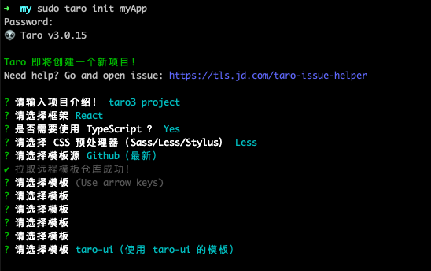

Taro 3.x 时代
Taro 在今年 7 月份正式推出推出 3.0 版本，与 Taro1/2 编译型架构不同，Taro3 是一种解释型架构。可以让开发者获得完整的 React/Vue 等框架的开发体验。
升级之旅由此开始
项目版本信息
1 | Taro: 2.1.5 -> 3.0.15 |
项目初始化
最初，我按照 Taro 官方提供的迁移指南上的步骤进行升级。但是由于 Taro3 的 babel 配置及 webpack 配置发生改变，有大量的 npm 包缺少或是剩余，项目报错不好排查。所以我决定采从新建项目开始，让 taro init 帮我们解决一些基本的项目配置工作。
首先全局安装 @tarojs/cli , 使用 taro 进行项目初始化。
1 | npm install -g @tarojs/cli |
下面是我的安装选项：

因为之前的项目结构和生成的一致，这里就不对生成的项目结构进行改变，进行下一步：修改 config 配置。

开发配置
在上面的目录中 config 内放置的就是有关项目配置的文件，这里 taro 帮我们自动创建了三个配置文件，dev.js/index.js/ prod.js ，dev.js 对应的是开发环境的项目配置，prod.js 为生产环境，index.js 则是在开发环境和生产环境中都会用到的配置。
在开发环境中，我主要添加了路径别名，用来对路径进行缩写
1 | const path = require("path"); |
在原来的 taro2 项目中还有对 babel 的配置，由于 Taro3 的项目中自动集成了 babel-preset-taro 包, 并且通过 babel.config.js 进行 babel 配置，所以新项目的 index.js 配置文件中也不需要额外添加 babel 配置，可以自行修改 babel.config.js。
页面配置
在旧版本中，页面/项目 配置挂载在类组件的类属性或函数式的 config 属性上，通过 AST 分析取出来，生成 JSON 文件，这样无法动态生成配置。在 taro3 中，我们需要在 页面名.config.js ，文件中放置页面/项目的配置内容，并且该文件必须和页面/项目在同一文件夹。